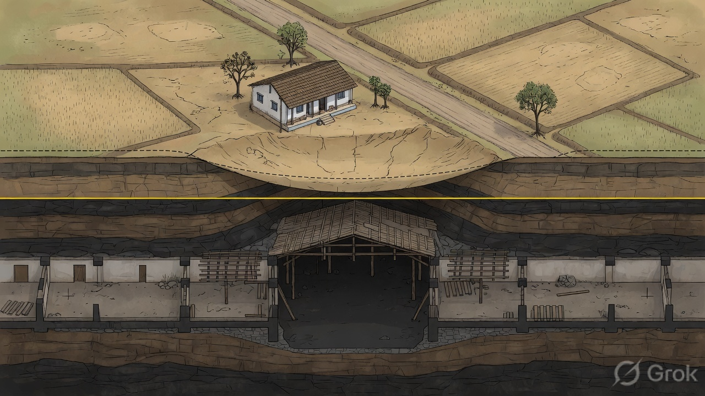

S01 · 0:00–0:07
Cutaway — the void, a quiet sag
Picture Isometric: gallery under farmland. Ground dishes a few degrees. Slow. No collapse.
Caption Underground coal panels can sag the ground above them.
VO Underground coal mining leaves a void. On the surface, the ground can sag — quietly.
Fix Pillars of coal + void, not a furnished basement.